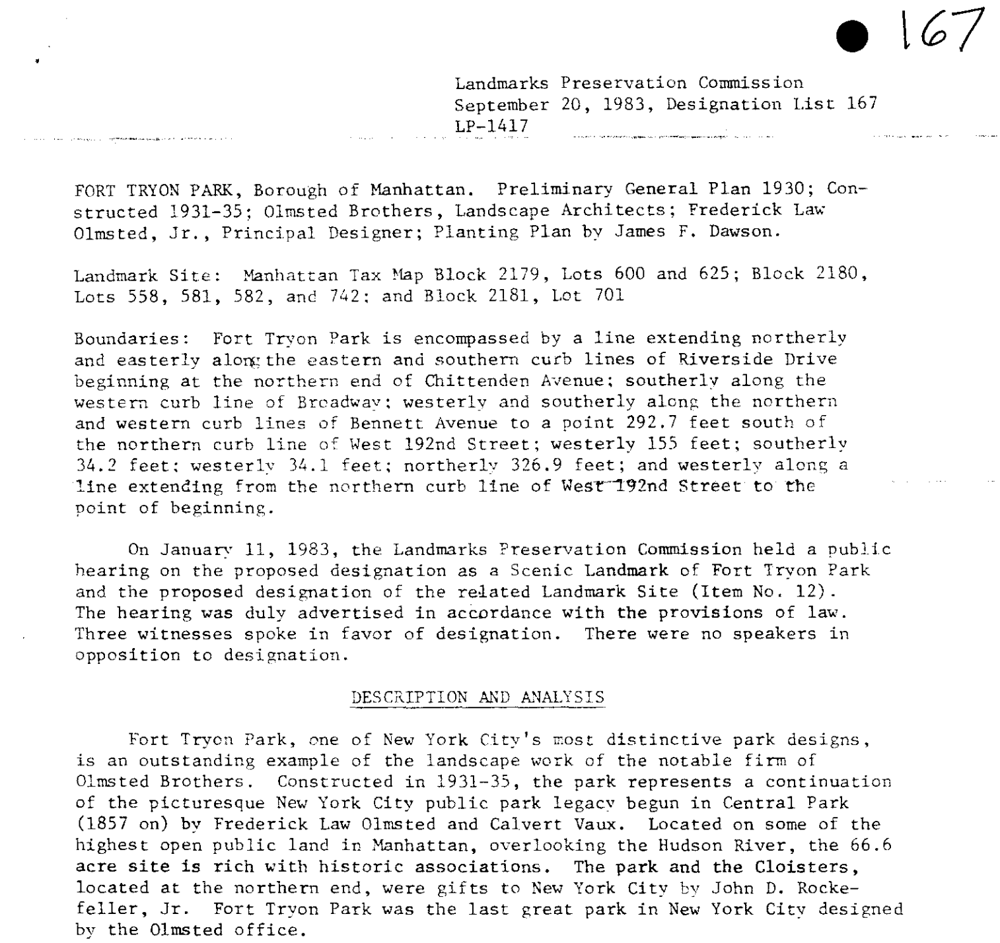

Fort Tryon park has one interesting history. Lots to unravel and learn about. The best experts are the very people who created the website dedicated to Fort Tryon Trust. They are dedicated to the preservation & year round events. To quote from their website:
“The Landmarks Preservation Commission finds that the design of Fort Tryon Park represents a skillful integration of its various elements, including views of the Hudson River, surviving remains of 19th-century estates, artful plantings, and architecture.” - The official 1983 report designating Fort Tryon Park as a landmark.
The area where the park is now was inhabited by Native Americans for centuries before it was colonized by white Europeans. The local Lenape tribe, the Wiechquaesgeck, called the area Chquaesgeck. They were described as living there in 1616 by the Dutch, who arrived and began attempting to drive them out; the land was finally taken by the Dutch in 1715. The earliest known Dutch name for the area was Lange Bergh (Long Hill).
During the Revolutionary War, the area was known as Mount Washington and was one of the battle sites along the Hudson River and part of the Battle of Fort Washington, a seminal Continental army defeat in the American Revolution fought in what is now Bennett Park. The British named the site after their major general, William Tryon (1729-1788), the last British governor of colonial New York City. Soon after the war, the Americans re-appropriated the name, referring to the area as Fort Tryon.